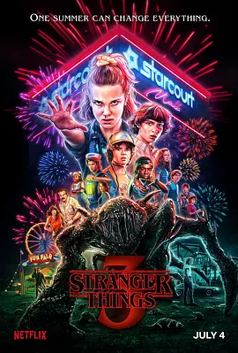

8.7
怪奇物语 第三季
Stranger Things Season 3
2019
美国
评分 8.7
导演:
马特·达菲 / 罗斯·达菲 / 肖恩·利维 / 乌塔·布里泽维茨
演员:
米莉·波比·布朗 / 薇诺娜·瑞德 / 大卫·哈伯 / 菲恩·伍法德 / 伽塔·马塔拉佐
类型:
剧情,悬疑,科幻
剧情简介
1985年的霍金斯镇被盛夏的热浪包裹，街道上充满了节日般的喧闹，新开的购物中心灯火通明，吸引着镇上所有人的目光。小组成员们正经历从童年迈向青春的微妙转折，情感在不知不觉中滋长，也让原本紧密的伙伴关系出现了些许裂痕。十一开始尝试探索普通少女的生活，而迈克与朋友之间的平衡也变得更加难以维持。然而，表面的热闹掩盖不了深处的躁动。电力系统异常，夜空中不断出现奇怪的闪光，废弃的仓库里似乎隐藏着不断逼近的未知声响。曾被封锁的力量重新蠢动，像是从地底深处卷土重来。镇民们在毫无察觉的情况下，被牵动进一张更庞大的阴影网络，而孩子们最先感受到危险的到来。随着夏夜愈加潮湿沉闷，那些被遗忘的旧敌人重新出现，不只是在暗处潜伏，更在光亮的商场、热闹的嘉年华中悄然伸出触角。友情与勇气再次被推到前线，每个人都必须面对自己的恐惧。在刺眼的霓虹灯和深夜的风声之中，他们明白过去的恶意从未真正离开，而唯有重新团结，才能阻挡那股试图撕裂现实的力量。